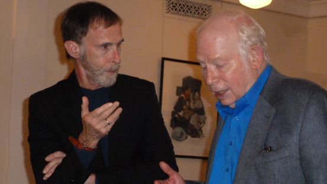
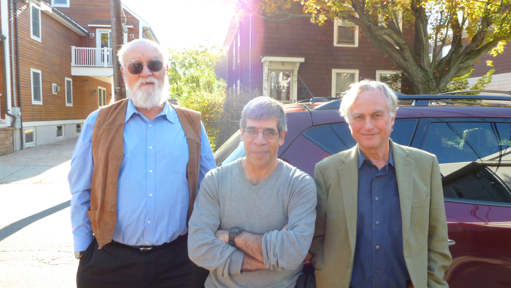

Final thoughts

Alex Rosenberg and Steven Weinberg. (Image credit: whyevolutionistrue.wordpress.com)
TODO…
Aftermath discussions
- Massimo’s blog posts on the workshop: part 1, part 2, and part 3.
- Massimo Pigliucci: On Naturalism. Philosophy Now.
- Jerry’s blog posts: part 1, part 2, and part 3.
- Sean’s blog posts: part 1 and part 2, Rationally Speaking’s interview of Sean, and 3am’s interview of Sean.

Daniel Dennett, Jerry Coyne, and Richard Dawkins. (Image credit: whyevolutionistrue.wordpress.com)

Ryan’s summary
- TODO